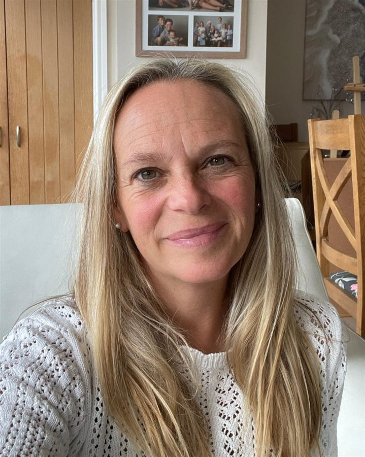
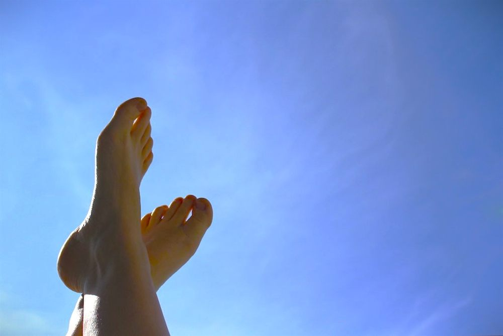

Founder of Vale Reflexology, practising in the heart of the Vale of Glamorgan since 2016.

I've been a professional Reflexologist since 2016. I'm a passionate healer with an alternative approach and am dedicated to helping my patients move through a wide range of physical, emotional and spiritual transitions in the most efficient and transformative way possible.
My treatments are specifically tailored to the needs of each patient to make sure they receive the approach that works best for them. Time and again I have seen the incredible healing power of my treatments. Please get in touch to find out more.
Get in touchUnlike a "nice" foot rub offered in a hotel or spa, Duopody reflexology is a clinical technique that takes two years to qualify in — ongoing study, practical assessment and formal exams, not a weekend course. Both feet are treated at the same time, with each system in the body reflected in the feet — and each foot able to represent pairs in life, such as past or present.
Kim advises any client booking reflexology to check their practitioner is meaningfully qualified (HND Level 5 minimum) — every reflexologist should be dedicated to the highest quality of care.

As a trained reflexologist, Kim has seen the immense benefits that reflexology can bring to both physical and mental health. Whether you are looking to improve your overall wellbeing, reduce stress, or alleviate pain and discomfort, reflexology can be a powerful tool to help achieve your goals. While a single session can be helpful, the most significant benefits come with regular sessions, working together to address your specific needs.
True reflexology requires study, and Kim completed over two years of extensive training, fully accredited to provide clients with the expert care they deserve. Unlike hotel or spa treatments, this training focuses on improving overall health and wellness with specific health needs in mind — not just a temporary, transient escape.
Before reflexology, Kim spent a 20-year career within the healthcare, life science and pharmaceutical industry, becoming familiar with many disease areas and treatments. Over that period her interest in alternative therapies grew — alongside a realisation that modern medicine does not have all the answers, and that many ancient cultures' therapies have an impact modern Western medicine is only now acknowledging.
— Joan Welsh
Book a Session with Kim